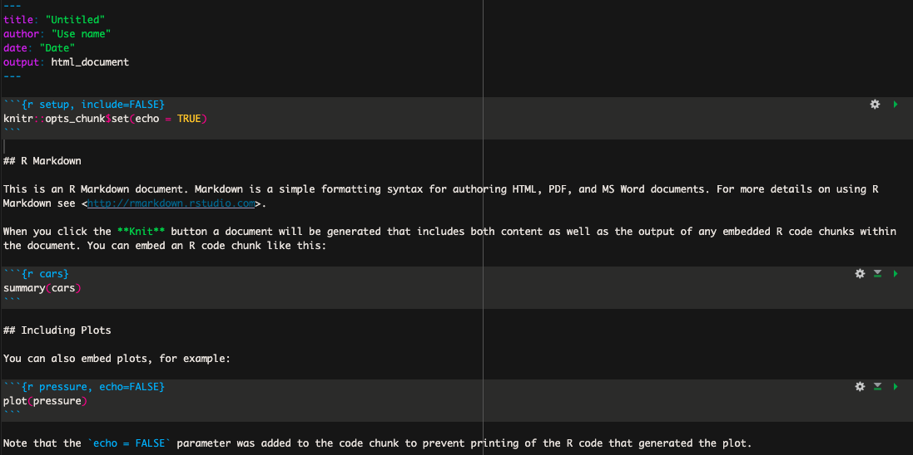

2 Basic R Markdown
Ce petit guide à été rédigé afin de familiariser les nouvelles étudiantes/étudiants et stagiaires du laboratoire Lazar à l’analyse de données de séquençage d’amplicons avec R.
2.1 Introduction à Rstudio et Rmarkdown
Pour des raisons pratiques, je recommande de rédiger les scripts dans des fichiers de type R Markdown plutôt que R Script. Ce type de fichier permet de facilement annoter un script entre des sections de codes comprises dans un bloc (chunk en anglais). De plus, les blocs de codes permettent d’exécuter seulement certaines sections de code à la fois, ce qui ultimement permet de mofidier puis exécuter seulement ces blocs sans avoir à re-exécuter l’entièreté du script.
La première étape consiste donc à créer un nouveau document de type RMardown. Pour ce fichier, ouvrez RStudio, puis cliquez sur Fichier. Dans le menu déroulant sélectionner Nouveau Fichier puis R Markdown....
Dans la nouvelle fenêtre vous pouvez donner le titre que vous voulez à votre nouveau document. Par défault le nouveau document affiche une petite introduction ainsi que des exemples tel que sur l’image ci-dessous :

Ces informations ne sont pas pertinentes et vous pouvez supprimer l’ensemble du texte sous l’entête (l’entête correspond à la section délimitée par les trois tirets ---).
2.1.1 Bloc de codes
Dans Rmarkdown, les lignes de codes à exécuter doivent être comprises dans un bloc/chunk de code. Le texte non compris dans un bloc n’est donc pas considéré comme du code, ce qui permet d’annoter minutieusement votre script entre les blocs afin de vous y retrouver facilement.
Un bloc de code R doit toujours débuter avec les caractères suivants : ```{r}
et se terminer avec les caractères suivant : ```. Un bloc de code ressemble donc à ceci :
Un code/chunk peut être inséré avec l’une des façons suivantes :
- le raccourcit clavier :
Ctrl+Alt+I - tapper les caractères délimitants (
```{r}```) - l’onglet
CodepuisInsert chunk - le bouton vert avec le petit c et signe de plus en haut à droite.
Un fois votre code rédigé dans le chunk, vous pouvez exécuter l’entièreté du code contenu dans ce chunk en appuyant sur le bouton vert en haut à droite du code ( ▶ ).
Il est possible d’insérer des blocs de code de différents languages de programmation tels que Bash et Python, il suffit de remplacer le r entre les accolades par le nom du programme utilisé. Plusieurs autres options peuvent être appliqués sur les blocs, pour plus d’informations je vous recommande de consulter la documentation disponible sur internet.
2.1.2 Commandes de bases
Définir le répertoire de travail
Le répertoire/dossier de travail dans lequel se trouve les fichiers que nous voulons analyser peut être définit par défault en ultisant la commande root.dir dans un bloc de code de type setup tel que celui présenté ci-dessous :
Une fois le repertoire de travail définit par défaut de la sorte il n’est pas nécessaire d’inclure le chemin vers les fichiers que l’on veut importer tant qu’il se trouve dans le répertoire spécifié. Cela s’applique aussi à la sauvegarde de tableaux, figures ou autres.
Importer des données
Pour importer un fichier en format comma seperated value (csv) dans R on utilise la commande read.csv avec les arguments suivants :
file: Spécifier le nom du fichierheader: Déclarer la première ligne comme nom de colonnerow.names: Déclarer la première colone comme nom de rangésep: Déclarer la virgule comme séparateurcheck.name: Ne pas systématiquement remplacer le trait d’union par un point
```{r}
df = read.csv(file = "nom_fichier.csv", header = TRUE, row.names = 1, sep = ",", check.names = FALSE)
```Pour un tableau en format tab delimited on peut utiliser la fonction read.table et spécifier \t comme séparateur.
Option avancé
Une seconde option que je recommande et utilise personnellement consiste à utiliser la fonction glue du package glue
afin de coller le chemin prédifinit sur le nom du fichier. Dans ce cas-ci, il ne serait pas nécessaire de définir un répertoire par défaut.
Exemple d’utilisation :
```{r}
# Importer le package glue
library(glue)
# Définir le chemin par la variable path
path = "/chemin/vers/le/répertoire"
# Utiliser la fonction glue et indiquer le nom de la variable utilisée entre les accolades
df = read.csv(file = glue("{path}/nom_fichier.csv"), header = TRUE, row.names = 1, sep = ",", check.names = FALSE)
# Pour enregistrer un tableau
write.csv(x = df, file = (glue("{path}/tableau.csv")))
```Cette option est particulièrement utile lorsque l’on veut importer des fichiers à partir d’un certain répertoire mais enregistrer les figures et tableaux produits dans un différent répertoire. On pourrait ainsi spécifier deux paths distincts. Par exemple :
```{r}
library(glue)
# Définir les variable paths
path_importer = "/chemin/vers/le/répertoire"
path_sauvegarder = "/chemin/vers/le/répertoire"
# Importer un fichier
df = read.csv(file = glue("{path_importer}/nom_fichier.csv"), header = TRUE, row.names = 1, sep = ",", check.names = FALSE)
# Sauvegarder un tableau
write.csv(x = df, file = (glue("{path_sauvegarder}/tableau.csv")))
```